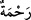

açıklamağa çalıştığımız bu âyet-i kerîme’de buyrulan ifâdedir.
“Meryem oğlu Îsâ’yı da arkalarından gönderdik.” Yâni Hz. Îsâ (a.s.) ile son bulana
dek her peygamberden sonra başka bir peygamber gönderdik. Onlardan sonra Hz. Îsâ’yı
(a.s.) gönderdik. Böylece İsrâiloğullarının ilk peygamberi Hz. Mûsâ (a.s.), son
peygamberleri ise Hz. Îsâ’dır (a.s.). Böylece onlardan sonra ona verdik, “Ondan sonra
bu rasûlleri gönderdim ve İsrâiloğullarına gönderilen peygamberleri Meryem oğlu Îsâ
(a.s) ile tamamladım.”
“Ve ona İncil’i verdik;” Bir defada, toptan indirdik. “Ve ona uyanların kalplerine
şefkat ve merhamet yerleştirdik.” Yâni, Hz. Îsâ’nın (a.s.) dînine giren havârîler ve
onlara tâbî olanlar gibi kimselerin gönüllerine yumuşaklık ve şefkat koyduk. Yâni,
onlarla din kardeşi olanlara karşı son derece rikkat ve kalplerine yumuşaklık, onlarla
din kardeşliği olmayanlara karşı da şefkat ve merhamet verdik. Onların herkese karşı
merhametli oluşları, kâfirlere karşı son derece heybetli ve sert olan Ashâb-ı Kirâm’ın
(r.a.) kendi aralarında merhametli, mü’minlere karşı alçak gönüllü, şefkatli olmaları
gibidir.
Denilmiştir ki: İncil’de affedici olmak ve eziyet görse bile karşılık vermemek
emredilmiştir.
En kolay iş olsa da kötülüğe kötülükle karşılık
Kötülüğe iyilik etmektir asıl adamlık
Yine onlara denilmiştir ki: Sağ yüzüne tokat vurana sol yüzünü de çevir, elbiseni
soyana gömleğini de ver. Onlar için herhangi bir cana veya organa karşılık işlenen
cinâyetten dolayı kısas yoktu. Onlar da bu emirlere uydular, Allah’a itâat ettiler,
birbirlerine karşı merhamet ve sevgi ile yaklaşırlardı. Katılıkla nitelenen Yahudiler ise
bunların aksine davranırlardı.
“Uydurdukları ruhbanlığa gelince,” Ruhbâniyet kelimesi, gizli bir fiil ile nasb
edilmiş olup, açıktan gelen bir fiil onu açıklamaktadır. Yâni, Hz. Îsâ’ya (a.s.) uyanlar
ruhbanlığı dinlerinde olmadığı halde uydurdular ve kendilerini ona göre yaşamağa
zorladılar. Ruhbâniyet kelimesi, kendisinden önce gelen __WORD__/onu îcâd ettiler ifâdesine
vâv bağlacıyla bağlanmış olup bu cümle onun sıfatıdır. Bu takdirde mânâ şöyle olur:
Onların kalplerine şefkat ve merhamet ile kendileri tarafından uydurulmuş ruhbanlık
verdik. Şöyle de olabilir: O ümmetin ardından aralarında merhamet bulunan ruhbânlığı
îcâd ederek kendilerine yükleyen bu ümmeti gönderdik.
Fethu’r-Rahmân adlı eserde şunlar kaydedilmiştir: Mûtezile’ye göre âyetteki
ruhbâniyet kelimesi, __WORD__ cümlesinin açıkladığı gizli bir fiil ile mansûb olup, __WORD__ ve __WORD__ kelimeleri üzerine atfedilmiş değildir. Dolaysiyle bu âyet-i kerîmeye dayanarak,
kulun kendi fiilini kendi yaratmakta olduğu hükmünü çıkarıp âyeti kendi mezheplerine
göre açıklamışlardır.
Ruhbanlık, iftar etmeden oruca devam etmek, sert kıllı elbiseler giymek, et yememek,